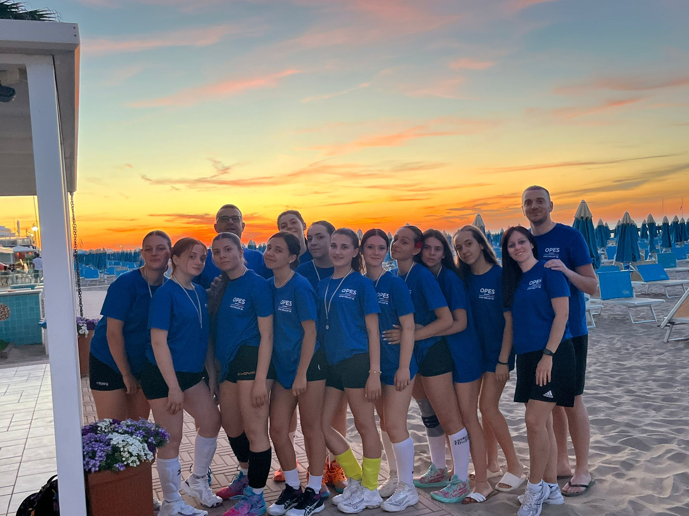
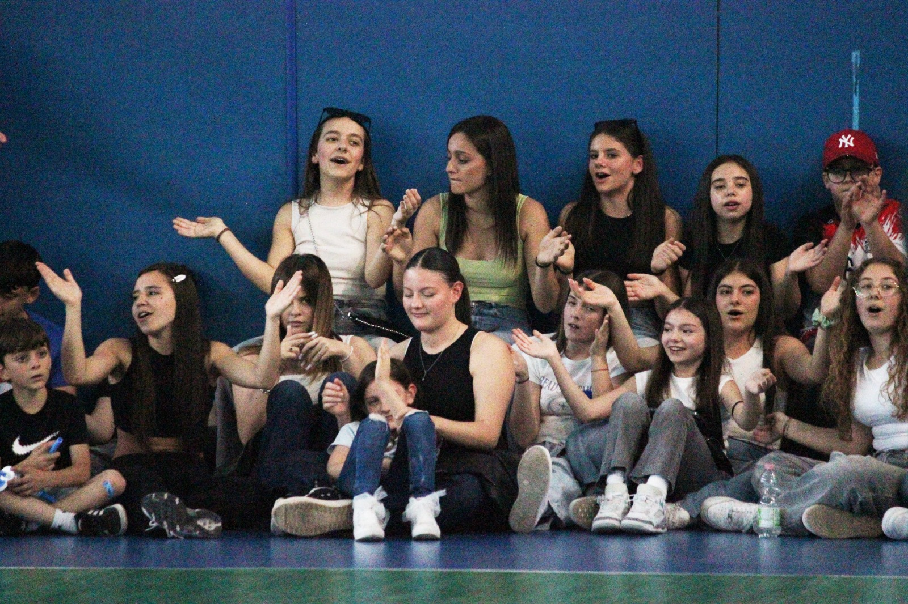
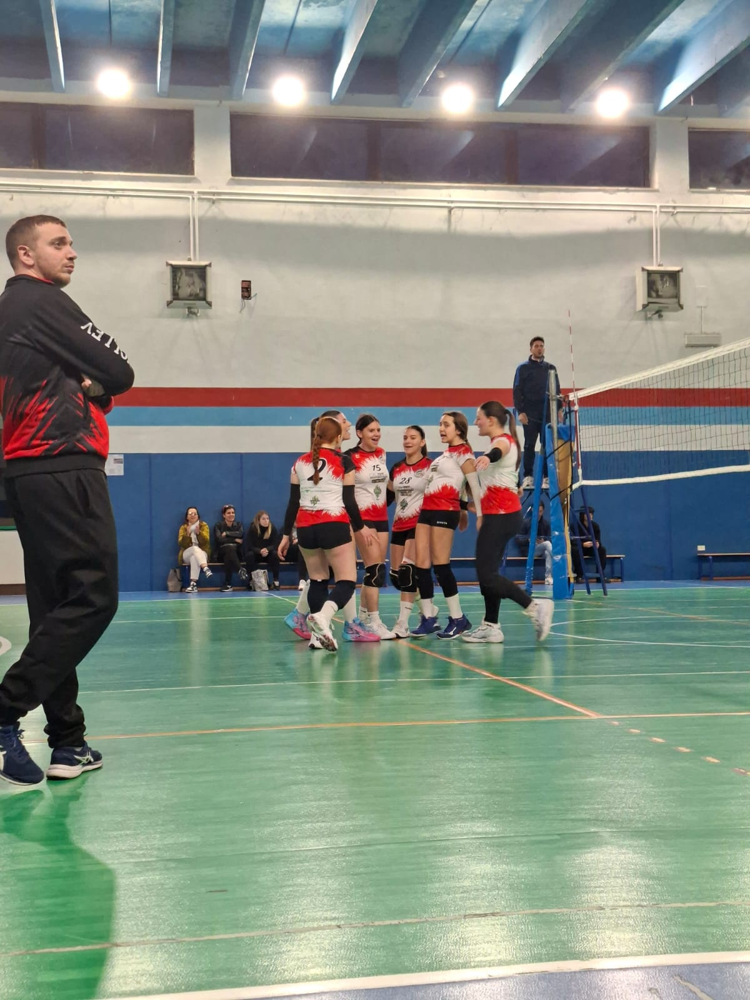
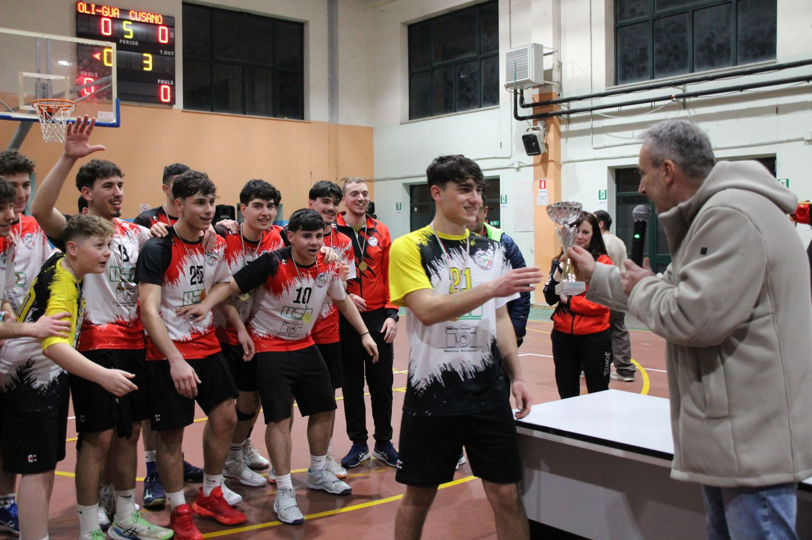
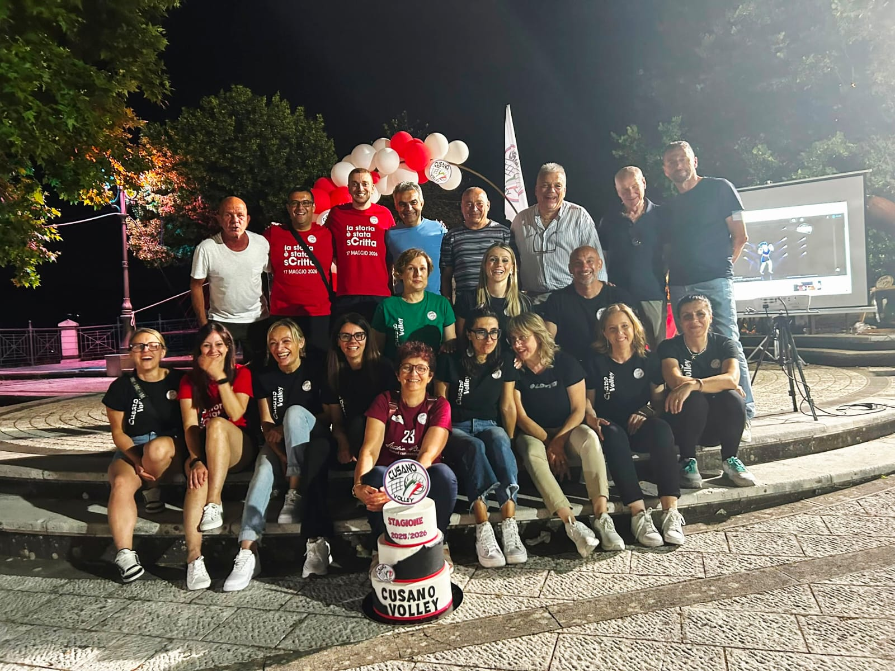
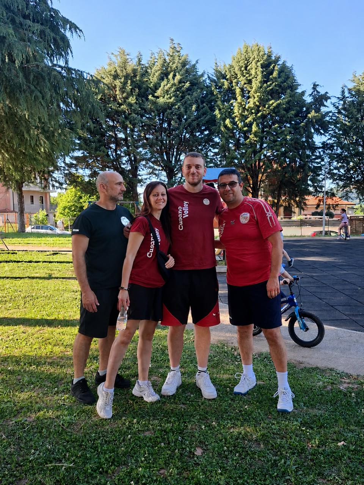
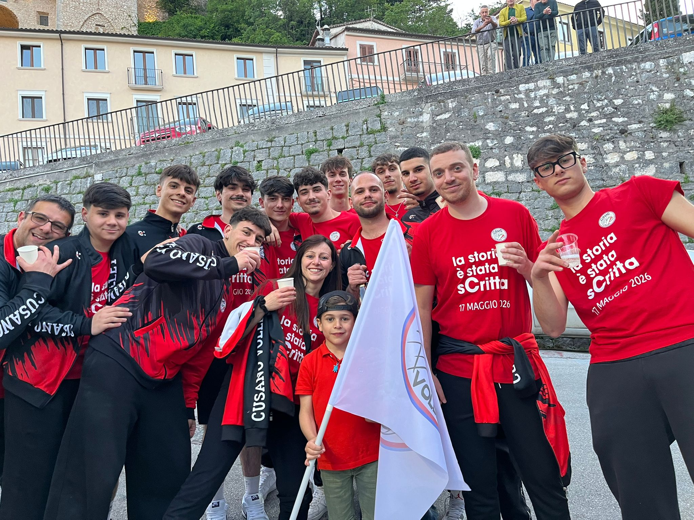

Cusano Volley
Fondata nel 2008, A.S.D. Cusano Volley è una società sportiva che da 18 anni promuove la pallavolo, la crescita dei giovani e i valori dello sport.
“Passione, Impegno, Crescita”
Chi siamo
Da oltre 18 anni la nostra società opera con passione nel settore giovanile e nelle categorie senior, sia maschili che femminili.
Investiamo tempo, energie e risorse nella crescita dei giovani, offrendo la possibilità di praticare la pallavolo in un ambiente sano, educativo, familiare e ricco di valori.
Oggi Cusano Volley è un punto di riferimento per il territorio, per le famiglie e per tutti gli atleti che vogliono crescere dentro e fuori dal campo.
Operiamo nei comuni di Cusano Mutri e Cerreto Sannita con trasferte in tutta la Campania.




La Serie C: il nostro presente
La Serie C rappresenta per noi un traguardo importante e allo stesso tempo una nuova sfida da affrontare con entusiasmo, organizzazione e ambizione.
Arrivare in Serie C significa portare il nome di Cusano Volley in un campionato di alto livello, dando visibilità alla società, agli atleti, al territorio e agli sponsor che sceglieranno di accompagnarci.
Essere sponsor oggi significa entrare in un progetto sportivo solido, riconosciuto e orientato al futuro.
Scarica Brochure PDFLe nostre squadre
Cusano Volley è presente sia nel settore maschile che nel settore femminile, accompagnando gli atleti dai primi passi nel minivolley fino ai campionati senior.
S3 Minivolley
Il primo approccio alla pallavolo: gioco, movimento, coordinazione e divertimento.
Under 12
Le prime competizioni ufficiali, imparando tecnica, regole e spirito di squadra.
Under 13
Una fase importante di crescita tecnica, sportiva e personale.
Under 16
Allenamenti più strutturati, tattica, disciplina e preparazione agonistica.
Under 19
Il passaggio finale del settore giovanile verso i campionati senior.
Prima Divisione
Una categoria competitiva che valorizza giovani atleti e crescita tecnica.
Serie C
Il massimo livello della società: ambizione, esperienza e rappresentanza del territorio.
Amatoriale
Pallavolo, benessere e socialità per continuare a vivere questo sport insieme.
Dirigenza e Staff Tecnico
Dietro ogni successo sportivo c'è una squadra di persone che lavora ogni giorno con passione, competenza e spirito di servizio. Dirigenti e tecnici condividono un unico obiettivo: accompagnare ogni atleta nella crescita sportiva, personale e umana.

La Dirigenza
Una dirigenza composta da persone che dedicano tempo, energie e competenze alla crescita della società, curando ogni aspetto organizzativo e promuovendo i valori che contraddistinguono Cusano Volley.
Presidente: ANTONIO CIVITILLO
Dirigenti: Crocco Antonella, Cassella Mariaconcetta, Civitillo Antonio, Civitillo Pasquale, Civitillo Raffaele, Del Vecchio Elvira, Di Donato Giovanni, Di Palma Amedeo, Mastrillo Domenico, Maturo Annarita, Maturo Italo, Mongillo Rosanna, Orsino Raffaella, Pascale Tiziana, Perfetto Antonella, Perfetto Grazia, Tammaro Carmela, Valente Antonio

Lo Staff Tecnico
Allenatori qualificati e preparati seguono quotidianamente gli atleti, favorendo lo sviluppo tecnico, tattico e umano, accompagnandoli in un percorso di crescita continuo.
Di Palma Amedeo, Maturo Italo, Cassella Mariaconcetta, Di Donato Giovanni.
I nostri risultati
Negli anni abbiamo costruito un percorso importante, fatto di campionati, tornei, convocazioni e traguardi sportivi raggiunti con lavoro e continuità.
Partecipazioni alle finali nazionali FIPAV
Titoli regionali giovanili
Titoli Interprovinciali
Nuova stagione sportiva
I numeri della società
I numeri raccontano la solidità del nostro progetto sportivo e il lavoro quotidiano svolto dalla società.
Anni di attività
Atleti
Campionati medi ogni anno
Trasferte annuali
Allenatori
Palestre
Titoli Interprovinciali
Campionati ufficiali

Perché scegliere noi
Scegliere Cusano Volley significa sostenere una società che fa crescere persone prima ancora che atleti.
Crediamo nella formazione tecnica e umana, nel rispetto, nel fair play, nello spirito di squadra e nel valore educativo dello sport.
La nostra più grande vittoria è vedere crescere ogni atleta, dentro e fuori dal campo.
Perché diventare nostro sponsor
Territorio
Investire nello sport significa investire nel territorio, nei giovani, nelle famiglie e nella comunità.
Visibilità
Il logo della tua azienda potrà essere presente durante campionati, tornei, eventi e comunicazioni ufficiali.
Social media
Promozione attraverso post dedicati, locandine, fotografie, video e contenuti promozionali.
Gare ufficiali
Ogni partita è un’occasione di visibilità grazie alla presenza di pubblico, famiglie, atleti e società ospiti.
Materiale ufficiale
Possibilità di inserire il marchio su maglie gara, tute, felpe, borse, banner e materiale promozionale.
Responsabilità sociale
Sponsorizzare Cusano Volley significa sostenere concretamente sport, giovani e benessere della comunità.
Pacchetti sponsor
Realizziamo proposte di sponsorizzazione personalizzate, studiando insieme all’azienda la soluzione più adatta agli obiettivi di comunicazione e al budget disponibile.
Richiedi Listino SponsorDiventa parte della nostra squadra
Ogni grande atleta ha iniziato con il primo allenamento. Vieni a vivere la passione per la pallavolo insieme a noi.
Telefono:
+39 327 079 7844
Email:
cusanovolley@gmail.com
Sito web:
cusanovolley.altervista.org
Instagram:
@cusanovolley
Facebook:
Cusano Volley